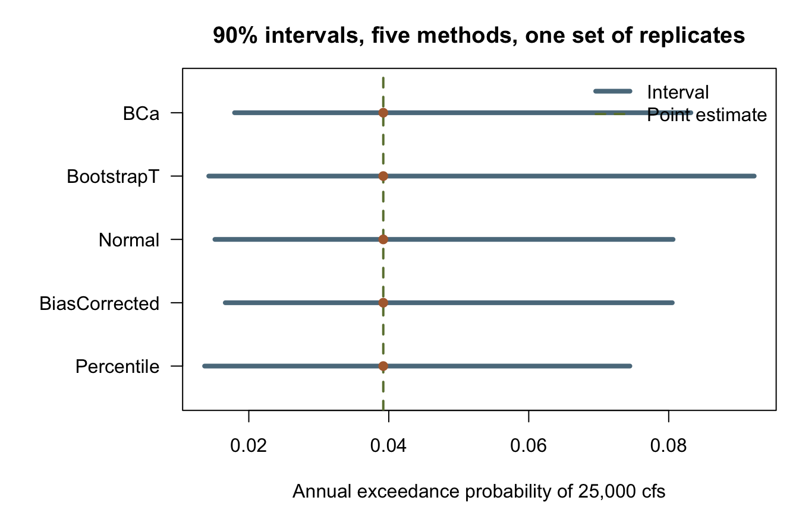

library(corehydror)15. A custom bootstrap
bootstrap_analysis() puts a confidence interval on a fitted distribution’s quantiles. That is the question flood frequency asks most often, but it is the only question that verb answers, because the statistic is built into it. bootstrap_custom() lifts that restriction. You write the resampling rule, the fitting rule and the statistic as ordinary R functions, and the ported Numerics bootstrap calls them, so any quantity you can compute from a fitted parameter set can be given an interval. All four upstream delegates (ResampleFunction, FitFunction, StatisticFunction and JackknifeFunction) and all five interval methods are reachable this way. Like example 13, it has no upstream counterpart: the USACE-RMC Numerics-Python-Examples repository has no bootstrap notebook.
What you’ll learn
- Put a confidence interval on a statistic the package has no verb for: here the annual probability of exceeding a fixed discharge under a fitted distribution.
- The exact signature of each of the four functions, which is the likeliest thing to get wrong.
- Draw inside
resamplewithrng_integers(), off the generator the replicate hands you, and never withsample()orrunif(). - Compare all five interval methods on one bootstrap, and read what their disagreement means.
- Where the cross-language guarantee stops on the callback path, and how to write functions that keep it.
Setup
A statistic the package does not provide
Forty years of annual peak discharge, drawn from a log-normal population through the seeded core so the Python twin has the identical record. LnNormal is parameterized by the REAL-space mean and standard deviation, not by the log-space ones, following the C# class it is ported from.
peaks <- dist_random(distribution("LnNormal", c(12000, 5200)), 40, seed = 2026)
cat(sprintf("n = %d, mean = %.1f cfs, max = %.1f cfs\n", length(peaks), mean(peaks), max(peaks)))n = 40, mean = 12871.5 cfs, max = 27919.2 cfsThe design question is not “what is the 100-year flood”, it is “how often does this levee overtop”. The levee crest passes 25,000 cfs, so the statistic wanted is the annual exceedance probability of 25,000 cfs under the fitted distribution:
\[ p = 1 - F(25{,}000 \mid \hat{\theta}) \]
bootstrap_analysis() cannot express this. It inverts the fitted distribution at a probability and gives an interval on the resulting discharge; here the discharge is fixed by the levee and the probability is the unknown. The point estimate is one line.
threshold <- 25000
fitted <- dist_fit("LnNormal", peaks, method = "mle")
p_hat <- 1 - dist_cdf(fitted, threshold)
cat(sprintf("Fitted LnNormal: mean = %.1f, sd = %.1f\n", fitted$params[1], fitted$params[2]))Fitted LnNormal: mean = 12888.2, sd = 5789.1cat(sprintf("P(peak > %d) = %.5f, about 1 in %.1f years\n", threshold, p_hat, 1 / p_hat))P(peak > 25000) = 0.03922, about 1 in 25.5 yearsThat single number carries no indication of how firmly 40 observations pin it down, which is what the bootstrap is for.
The three functions
resample, fit and statistic are required; jackknife is a fourth, used only by "BCa". Their argument orders are given in ?bootstrap_custom, and the C++ side cannot tell a swapped pair from a deliberate one, so they are worth reading rather than guessing.
resample(data, parameters, rng) returns one bootstrap sample. rng is a handle on THIS replicate’s generator. Draw from it with rng_integers() or rng_uniform(). Using sample() or runif() instead would draw from R’s own random state, and the run would stop being reproducible and stop agreeing with Python. rng_integers() draws on [min, max) counting from 0, matching the ported MersenneTwister.Next(minInclusive, maxExclusive), so R’s 1-based subscript needs the + 1L.
resample_iid <- function(data, parameters, rng) {
data[rng_integers(rng, length(data), 0, length(data)) + 1L]
}fit(data) returns the parameter vector, and statistic(parameters) turns a parameter vector into the numbers to be given intervals. Splitting the work this way is what lets the bootstrap report an interval on the parameters and on the statistic from the same replicates.
fit_lnnormal <- function(data) dist_fit("LnNormal", data, method = "mle")$params
exceedance <- function(parameters) {
1 - dist_cdf(distribution("LnNormal", parameters), threshold)
}jackknife(data, index) returns data with observation index left out, and index counts from 0. In R that is data[-(index + 1)]. The naive data[-index] is wrong at every index, not just one: at index = 0 it is data[-0], which R evaluates to the EMPTY vector, and at every later index it has the right length but drops the wrong observation.
leave_one_out <- function(data, index) data[-(index + 1)]Run the bootstrap
Four hundred replicates, seeded. Each one calls resample, then fit, then statistic, so the cost of a run is 400 crossings back into R plus the fit inside each.
boot <- bootstrap_custom(
data = peaks,
resample = resample_iid,
fit = fit_lnnormal,
statistic = exceedance,
replicates = 400,
alpha = 0.1,
ci_method = "Percentile",
seed = 2026
)
cat(sprintf("estimate %.5f\n", boot$estimate))estimate 0.03922cat(sprintf("90%% interval [%.5f, %.5f]\n", boot$lower, boot$upper))90% interval [0.01368, 0.07445]cat(sprintf("standard error %.5f\n", boot$standard_error))standard error 0.01889cat(sprintf("replicate mean %.5f (bias %+.5f)\n", boot$mean, boot$mean - boot$estimate))replicate mean 0.03976 (bias +0.00054)cat(sprintf("valid / failed %d / %d\n", boot$valid_count, boot$failed_replicates))valid / failed 400 / 0Two fields deserve attention. estimate is the statistic of the ORIGINAL fit, not an average over replicates, so it is exactly the p_hat computed above. mean is the average over the valid replicates, and the gap between the two is the bootstrap bias estimate. It is small and positive here, which says the resampled fits sit slightly further into the tail than the original does.
The interval is the useful output. A best estimate near 1 in 25 years, with a 90% interval running from roughly 1 in 73 to roughly 1 in 13, is a very different design statement from the point estimate on its own.
cat(sprintf("Return period: best %.1f yr, interval [%.1f, %.1f] yr\n",
1 / boot$estimate, 1 / boot$upper, 1 / boot$lower))Return period: best 25.5 yr, interval [13.4, 73.1] yrThe parameters get the same treatment from the same replicates.
params <- data.frame(
parameter = c("mean", "sd"),
estimate = boot$parameter_estimate,
lower = boot$parameter_lower,
upper = boot$parameter_upper
)
print(params, row.names = FALSE, digits = 6) parameter estimate lower upper
mean 12888.24 11590.24 14578.71
sd 5789.06 4461.01 6962.87Comparing the five interval methods
The replicates do not change; only the rule for turning them into two endpoints does. "Percentile" reads the two order statistics straight off the sorted replicates. "BiasCorrected" shifts the two probabilities by the fraction of replicates below the original estimate, which corrects for a skewed replicate distribution. "Normal" and "BootstrapT" work on the ported cube-root transform of the statistic, and "BootstrapT" runs the studentized workflow, nesting inner_replicates further resample-and-fit pairs inside every replicate. "BCa" adds an acceleration term estimated by leave-one-out, and it is the only method that calls jackknife. The other four ignore that argument entirely, so passing it costs nothing.
"BootstrapT" is the expensive one. With the ported defaults it would run 10,000 times 300 inner fits, so inner_replicates is dropped to 25 here to keep the page fast.
methods <- c("Percentile", "BiasCorrected", "Normal", "BootstrapT", "BCa")
intervals <- do.call(rbind, lapply(methods, function(m) {
r <- bootstrap_custom(
data = peaks, resample = resample_iid, fit = fit_lnnormal, statistic = exceedance,
jackknife = leave_one_out, replicates = 400, alpha = 0.1, ci_method = m,
inner_replicates = 25, seed = 2026
)
data.frame(method = m, lower = r$lower, upper = r$upper, width = r$upper - r$lower,
return_low = 1 / r$upper, return_high = 1 / r$lower)
}))
print(intervals, row.names = FALSE, digits = 5) method lower upper width return_low return_high
Percentile 0.013685 0.074451 0.060766 13.432 73.074
BiasCorrected 0.016640 0.080509 0.063869 12.421 60.096
Normal 0.015159 0.080623 0.065464 12.403 65.968
BootstrapT 0.014280 0.092215 0.077935 10.844 70.028
BCa 0.017966 0.083167 0.065200 12.024 55.660All five share the same lower end to within about half a percentage point of exceedance probability. They part company at the upper end, which is the tail of a right-skewed replicate distribution, and that is exactly where a method’s treatment of skew shows up. "Percentile" gives the narrowest interval because it applies no correction at all; "BiasCorrected" and "BCa" shift the window upward to account for the skew; "BootstrapT" is the widest, which is its usual behavior on small samples and is not by itself a sign of anything wrong.
The spread across methods is worth reporting. When five defensible rules applied to one set of replicates disagree by this much, the honest reading is that 40 observations do not determine the tail probability tightly, not that one of the five is the right answer.
op <- par(mar = c(4.5, 8, 3, 1))
ord <- seq_len(nrow(intervals))
plot(NA, xlim = range(c(intervals$lower, intervals$upper)), ylim = c(0.5, nrow(intervals) + 0.5),
yaxt = "n", ylab = "", xlab = "Annual exceedance probability of 25,000 cfs",
main = "90% intervals, five methods, one set of replicates")
axis(2, at = ord, labels = intervals$method, las = 1)
abline(v = boot$estimate, col = "#6b7f3f", lty = 2, lwd = 2)
segments(intervals$lower, ord, intervals$upper, ord, col = "#5b7a8c", lwd = 4)
points(rep(boot$estimate, nrow(intervals)), ord, pch = 19, col = "#b06a3b")
legend("topright", c("Interval", "Point estimate"), lty = c(1, 2), lwd = c(4, 2),
col = c("#5b7a8c", "#6b7f3f"), bty = "n")
par(op)What reproduces across languages, and what does not
Most pages on this site can promise that a seeded run gives bit-identical numbers in R and Python, because every operation on them happens inside the shared C++ core and the two packages call the same compiled code. The callback path is where that promise needs a condition attached, and it is better stated plainly than buried. It applies to this page, to example 13’s custom objective and to example 14’s custom posterior alike.
The resampled INDICES still come from the core generator. rng_integers() reaches the same seeded Mersenne Twister in both languages, so a given seed selects the identical observations in the identical order, replicate for replicate. That half is unconditional. The other half is not: fit and statistic are your own R or Python code, and the two languages do not guarantee identical rounding for the same formula. A run reproduces across languages if and only if your functions return bit-identical values.
Three rules cover almost every case:
+,-,*and/are IEEE-deterministic. Written the same way, they give the same bits in both languages.log,exp,sqrt,powand friends come from each platform’s own math library. They are accurate but not required to round identically, so they can differ in the last bit.- R’s
sum()andmean()accumulate in extended precision where Python’s do not. An explicit loop is the portable spelling of a sum on both sides.
A bootstrap is more forgiving of a differing last bit than MCMC is. One flipped bit perturbs one replicate, and the ordering of the other 399 is untouched, so the interval usually moves by nothing or by one order statistic. MCMC has no such tolerance: one flipped accept-or-reject decision changes every state after it, and the chains diverge outright. The rule is the same in both cases, but the consequence of breaking it is much louder in the MCMC one.
The callbacks on this page delegate their arithmetic back to the compiled core (dist_fit() and dist_cdf() are core code called through R), so this page’s numbers do in fact match the Python twin’s exactly. That is a measured property of these particular functions, not something the package can promise about any function you write. Because of it, the reproduction check below uses a fit written from arithmetic alone, where the guarantee holds by construction.
Key takeaways
bootstrap_custom()gives a confidence interval to anything computable from a fitted parameter set, not only to the quantilesbootstrap_analysis()knows about.- Get the four signatures from the documentation.
resample(data, parameters, rng),fit(data),statistic(parameters),jackknife(data, index)withindexcounting from 0. - Draw inside
resamplefrom thernghandle you are given. Anything else silently breaks reproducibility, in a way no error message will report. - Run more than one interval method. Their disagreement is information about the sample, and on a right-skewed statistic it is usually concentrated in the upper endpoint.
- On the callback path, cross-language reproduction is conditional on your own arithmetic. Arithmetic-only functions keep it;
logandexpand language-native summation need not.
Reproduction check
The block below has two halves, and they carry different weight.
The first half pins this page’s own statistic, the exceedance probability and its interval. Those are a regression on this file: nothing upstream computes them, so they check that the page still produces what it produced when it was written.
The second half pins the construct the package’s own cross-language fixture pins. Eight-point sample, iid resample off the core generator, a fit that is the sample mean summed in an explicit loop, the identity statistic, 200 replicates at seed 12345. Those are exactly the callbacks described above as safe: no log, no exp, no sum(). The same construct appears in fixtures/callback/callback_cross_language.json, where it is asserted at ZERO tolerance, meaning bit equality rather than a tolerance, and reproduced bit for bit by all four runners: the C++ fixture harness, R, Python and the dotnet oracle emitter driving the real C# Bootstrap class. The values below were read from that library. Here they are checked at 1e-15 relative, since R’s decimal parser can land one ulp off a written literal.
near <- \(x, literal, tol = 1e-15) abs(x / literal - 1) < tol
x <- c(4.1, 5.2, 4.8, 5.5, 4.9, 5.1, 5.3, 4.7)
mean_fit <- function(data) {
acc <- 0
for (xi in data) acc <- acc + xi
acc / length(data)
}
check <- bootstrap_custom(
data = x,
resample = resample_iid,
fit = mean_fit,
statistic = function(parameters) parameters,
replicates = 200,
alpha = 0.1,
ci_method = "Percentile",
seed = 12345
)
stopifnot(
# This page's own statistic: a within-R regression, not an upstream literal (see above).
near(boot$estimate, 0.039215959337224993),
near(boot$estimate, p_hat),
near(boot$lower, 0.013684822676157921),
near(boot$upper, 0.074451060952393025),
near(boot$standard_error, 0.018886626681229177),
near(boot$mean, 0.039757148419774853),
boot$valid_count == 400L,
boot$failed_replicates == 0L,
near(intervals$lower[intervals$method == "BCa"], 0.017966299726084607),
near(intervals$upper[intervals$method == "BCa"], 0.083166540758831606),
# The cross-language construct, read from the real C# Bootstrap class and pinned at zero
# tolerance in fixtures/callback/callback_cross_language.json.
near(check$estimate, 4.95),
near(check$lower, 4.750000000000001),
near(check$upper, 5.175),
near(check$standard_error, 0.1408037320342551),
near(check$mean, 4.961249999999999),
check$valid_count == 200L,
check$failed_replicates == 0L,
near(check$parameter_lower, 4.750000000000001)
)
cat("All reproduction checks passed.\n")All reproduction checks passed.